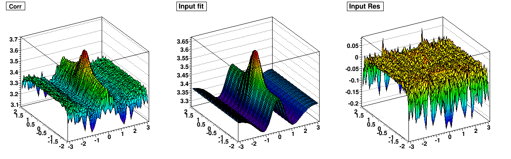
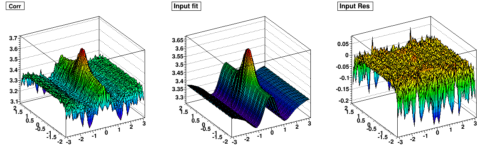

| Without v3 term |
 |
| With v3 term |
 |
| with v3 |
without v3 |
|
| offset |
2.99772 | 3.28786 |
| v1 |
-0.54086 | -0.09739 |
| v2 |
-0.20750 | -0.01380 |
| jet amp |
0.18885 | 0.18535 |
| jet width deta |
0.36527 | 0.36291 |
| jet width dphi |
0.30925 | 0.31831 |
| ridge gauss amp |
1.24925 |
0.28140 |
| ridge width dphi |
0.70102 | 0.52731 |
| v3 |
-0.04321 | 0.0 |